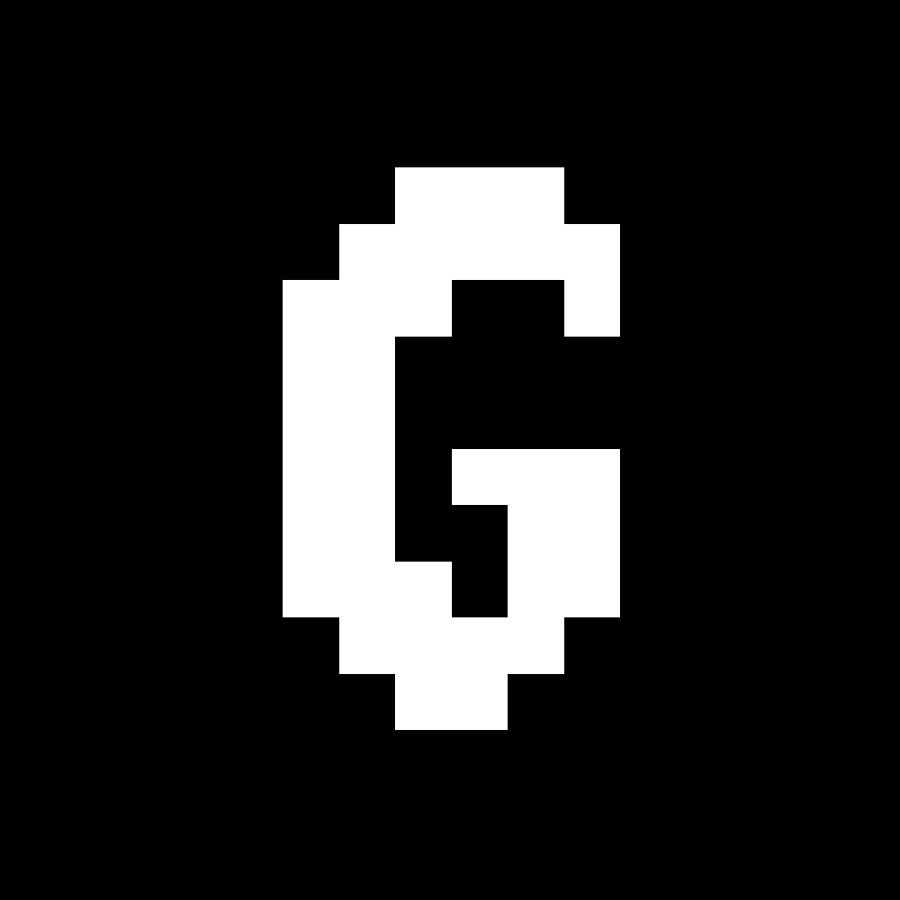
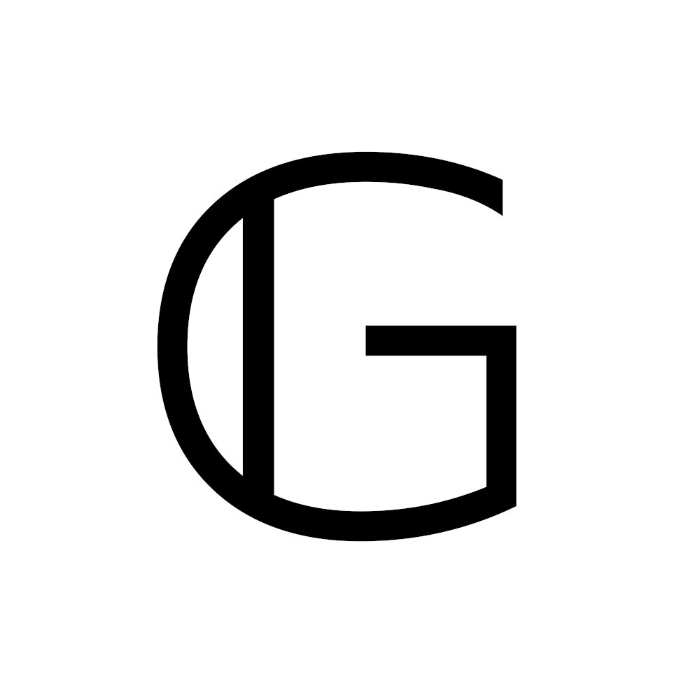

Giovanni's Diary > Chronological > Ephemeris > Entries >
2025-05-15 - Writing Giovanni's Diary
Today I took some time to reflect on how much I enjoy writing this public diary. I feel like It is one of those personal projects that I will keep maintaining for a long time, therefore I should take care of making the diary grow organically while keeping It structured and easy to navigate.
I dedicate some time every day to maintaining this blog, so It is always in the back of my mind. This morning I implemented some improvements, in particular I changed the favicon showing the letter "G" from an ugly hand (mouse) drawing in an 32x32 grid to a cool Blackboard bold letter. You may recognize the font since It is the famous Latex's "\mathbb" to denote number sets.

Figure 1: Old favicon

Figure 2: New favicon
Additionally I included some meta properties on the head section of the html in every page so that the new logo gets displayed as the link preview when you are sending the link somewhere such as discord, with a short description of the website. I then added some pages and went back to studying. Still, I was not done for the day as I began thinking about other things that could be improved and reflecting on the project.
First of all, when I just want to work on something naturally means that I am really enjoying It. Secondly, I like the long term goal of the project of documenting my time now. As I was wandering about how to improve this, I thought I could take inspiration from some other people that are making a similar thing, so I began searching the web.
Coincidentally (or maybe not) this same morning I saw a cool website on HackerNews - Internet Artifacts - which shows some of the most important moments and innovations in the early years of the internet. One of them in particular cached my attention, It was one of the first blogs ever "Justin's Links from the Underground" which pioneered the concept of sharing everything online. I thought It was cool and I kept going with my day, but I remembered about this blog while I was seeking inspiration to improve mine so I dig deeper.
To be clear, I don't like the modern way of sharing everything online, in fact I am totally the opposite. I rarely use social media, maybe once or twice a month, other than HackerNews or a bunch of mailing lists. Instead, here I can write long form content and I can be more thoughtful and considerate about what I publish online while respecting the privacy of others. Something that I feel like is missing in the dopamine-centric corporate-controlled digital world we live in.
I didn't know about Justin's website and after navigating It for about 20 minutes It felt like a huge maze. I watched a nice documentary overshare: the links.net story which tells his story and It was really interesting, but I wanted to find something else for inspiration. Again I started asking the internet and the internet answered: I found some communities that referred to themselves as "tildes" who are centered around a shared Linux server. How It works is that you get access to the machine and you can start doing whatever you want. This server then becomes a social place do share things and do stuff together, really amazing and nerdy! Obviously I immediately felt this was the thing for me and I started observing other people's pages, but I have to say that the big majority are underdeveloped or even empty. Still, I want to get closer to those communities because they are cool.
At the end of the day I didn't find someone to take inspiration from, but I found some communities to get motivation and I feel lucky about It. I realized that want to promote the routine of keeping a diary or a blog through my writings and help others with the technical details since this is waht I know best.